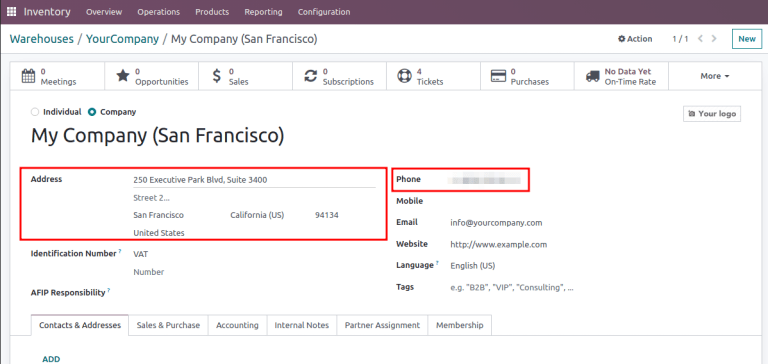
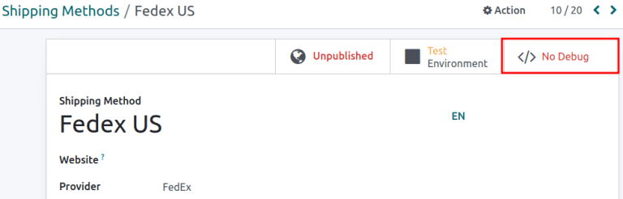

Third-party shipping carriers¶
Users can link third-party shipping carriers to Odoo databases, in order to verify carriers’ delivery to specific addresses, automatically calculate shipping costs, and generate shipping labels.
In Odoo, shipping carriers can be applied to a sales order (SO), invoice, or delivery order. For tips on resolving common issues when configuring shipping connectors, skip to the Troubleshooting section.
See also
The following is a list of available shipping connectors in Odoo:
Carrier |
Region availability |
|---|---|
FedEx |
All |
All |
|
All |
|
US Postal Service |
United States of America |
EU |
|
Bpost |
Belgium |
Easypost |
North America |
Shiprocket |
India |
Configuration¶
To ensure proper setup of a third-party shipping carrier with Odoo, follow these steps:
Install shipping connector¶
To install shipping connectors, go to .
Under the Shipping Connectors section, tick the third-party shipping carrier’s checkbox to install it. Multiple third-party shipping connectors can be selected at once. Then, click Save.
Note
Delivery methods can also be integrated with operations in the Sales, eCommerce, and Website apps. To install, refer to the install apps and modules documentation.

Delivery method¶
To configure the API credentials, and activate the shipping carrier, begin by going to , and select the desired delivery method.
Note
The list often includes two delivery methods from the same Provider: one for international shipping and one for domestic shipping.
Additional delivery methods can be created for specific purposes, such as packaging.
See also
Note
Ensure the delivery method is published when it should be available on the Website app. To publish a delivery method on the website, click the desired delivery method, then click the Unpublished smart button. Doing so changes that smart button to read: Published.
The Shipping Method page contains details about the provider, including:
Shipping Method (Required field): the name of the delivery method (e.g.
FedEx US,FedEx EU, etc.).Website: configure shipping methods for an eCommerce page that is connected to a specific website in the database. Select the applicable website from the drop-down menu, or leave it blank to apply the method to all web pages.
Provider (Required field): choose the third-party delivery service, like FedEx. Upon choosing a provider, the Integration Level, Invoicing Policy and Insurance Percentage fields become available.
Integration Level: choose Get Rate to simply get an estimated shipment cost on an SO or invoice.
Important
Select Get Rate and Create Shipment to also generate shipping labels.
Company: if the shipping method should apply to a specific company, select it from the drop-down menu. Leave the field blank to apply the method to all companies.
Delivery Product (Required field): the delivery charge name that is added to the SO or invoice.
Invoicing Policy: select and calculate an Estimated cost of shipping directly from the shipping carrier. If the Real cost of shipping is wanted instead, refer to this doc about invoicing real shipping costs.
Margin on Rate: specify an additional percentage amount added to the base shipping rate to cover extra costs, such as handling fees, packaging materials, exchange rates, etc.
Free if order amount is above: enables free shipping for orders surpassing a specified amount entered in the corresponding Amount field.
Insurance Percentage: specify a percentage amount of the shipping costs reimbursed to the senders if the package is lost or stolen in transit.

Shipping Method configuration page for FedEx US.¶
In the Configuration tab, fill out the API credential fields (e.g. API key, password, account number, etc.). Depending on the third-party shipping carrier chosen in the Provider field, the Configuration tab will contain different required fields. For more details about configuring specific carriers’ credentials, refer to the following documents:
Production environment¶
With the delivery method details configured, click the Test Environment smart button to set it to Production Environment.
Warning
Setting the delivery method to Production creates real shipping labels, and users are at risk of being charged through their carrier account (e.g. UPS, FedEx, etc.) before users charge customers for shipping. Verify all configurations are correct before launching the delivery method to Production.

Warehouse configuration¶
Ensure the warehouse’s Address (including ZIP code) and Phone number are entered accurately. To do that, go to , and select the desired warehouse.
On the warehouse configuration page, open the warehouse contact page by clicking the Company field.

Verify that the Address and Phone number are correct, as they are required for the shipping connector to work properly.
Product weight¶
For the carrier integration to work properly, specify the weight of products by going to , and selecting the desired product.
Then, switch to the Inventory tab, and define the Weight of the product in the Logistics section.

Apply third-party shipping carrier¶
Shipping carriers can be applied on a SO, invoice, or delivery order.
After configuring the third-party carrier’s delivery method in Odoo, create or navigate to a quotation by going to .
Sales order¶
To assign a third-party shipping carrier, and get an estimated cost of shipping, begin by going to . Create or select an existing quotation, and add the cost of shipping through a third-party carrier to a quotation, by clicking the Add Shipping button in the bottom-right corner of the Order Lines tab.

In the resulting Add a shipping method pop-up window, select the intended carrier from the Shipping Method drop-down menu. The Cost field is automatically filled based on:
the amount specified in the Total Order Weight field (if it is not provided, the sum of product weights in the order is used)
the distance between the warehouse’s source address and the customer’s address.
After selecting a third-party provider in the Shipping Method field, click Get Rate in the Add a shipping method pop-up window to get the estimated cost through the shipping connector. Then, click the Add button to add the delivery charge to the SO or invoice.
Delivery order¶
For users making shipments without installing the Sales app, assign the shipping carrier to the delivery order, by first going to the app. Then, from the Inventory Overview dashboard, select the Delivery Orders operation type, and choose the desired delivery order that is not already marked as Done or Cancelled.
In the Additional info tab, set the Carrier field to the desired third-party shipping carrier. When the delivery method is set to production mode, a Tracking Reference is provided.
See also

Troubleshooting¶
Since shipping connectors can sometimes be complex to set up, here are some checks to try when things are not working as expected:
Ensure the warehouse information (e.g., address and phone number) in Odoo is correct and matches the records saved in the shipping provider’s website.
Verify that the package type and parameters are valid for the shipping carrier. To check, ensure the shipment can be directly created on the shipping carrier’s website.
When encountering a price mismatch between Odoo’s estimated cost and the provider’s charge, first ensure the delivery method is set to production environment.
Then, create the shipment in both the carrier’s website and Odoo, and verify the prices are the same across Odoo, the shipping provider, and in the debug logs.
Example
When checking for a price mismatch in the debug logs, if the request says the package weighs six kilograms, but the response from FedEx says the package weights seven kilograms, it concludes that the issue is on FedEx’s side.
Debug log¶
Track shipping data inconsistencies by activating debug logging. To do that, go to the delivery method’s configuration page (), and select the desired shipping method. Click the No Debugging smart button to activate Debug Requests.
With Debug Requests activated, each time the shipping connector is used to estimate the cost of shipping, records are saved in the Logging report. To access the report, turn on developer mode, and go to .
Note
Logs are created for a shipping method each time the Get Rate button is clicked on SOs and invoices, and when a customer adds the shipping carrier to their order through the Website app.

Click the HTTP request line item to open a detailed page, and verify the correct information is sent from Odoo to the shipping carrier. In the HTTP response, verify that the same information is received.